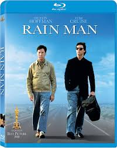
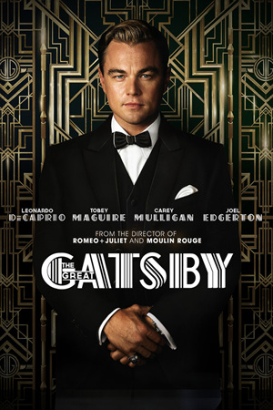
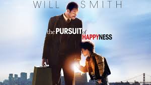

After graduated from University of Wisconsin Madison, I came back to Chengdu and start my new programmer path.
|  |
Rain ManRain Man is a 1988 American road comedy-drama film directed by Barry Levinson and written by Barry Morrow and Ronald Bass. |
|  |
The Great GatsbyThe film polarized critics, receiving both praise and criticism for its acting performances, soundtrack, visual style, and direction. |
|  |
the PURSUIT of HAPPYNESSThe Pursuit of Happyness is a 2006 American biographical drama film based on entrepreneur Chris Gardner's nearly one-year struggle being homeless. Directed by Gabriele Muccino, the film features Will Smith as Gardner, a homeless salesman. Smith's son Jaden Smith co-stars, making his film debut as Gardner's son, Christopher Jr. |